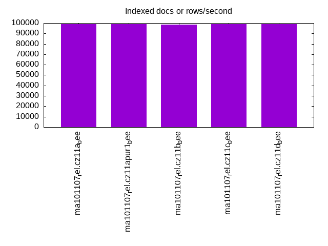
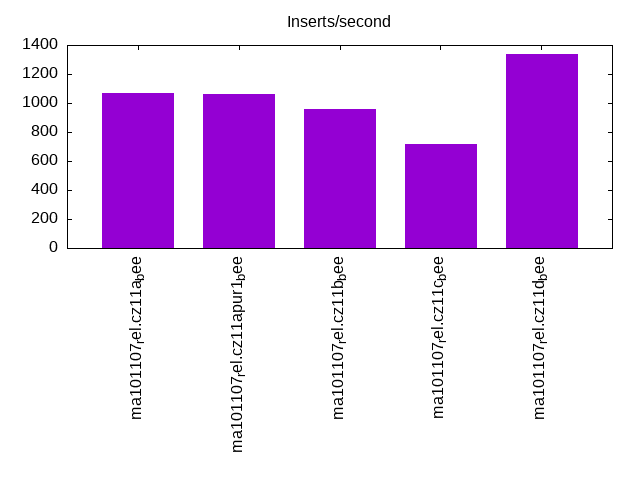
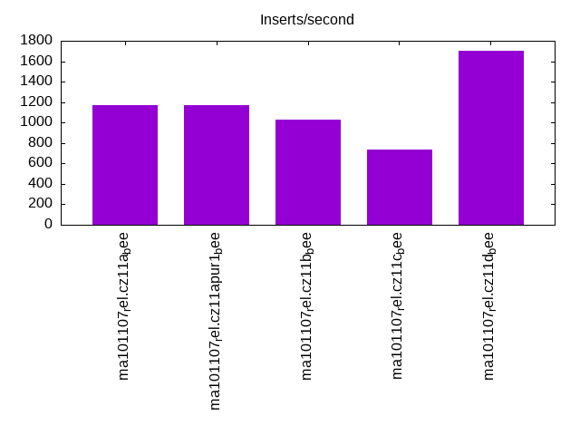
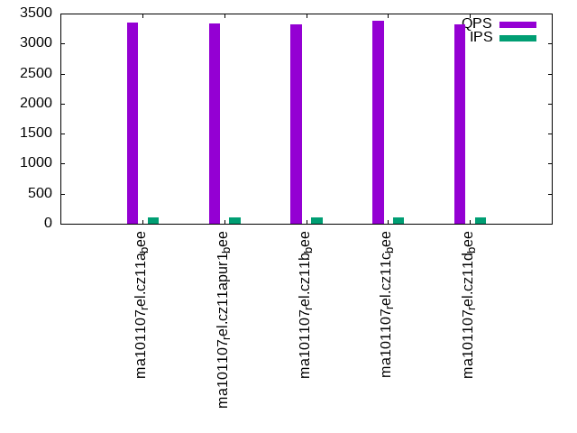
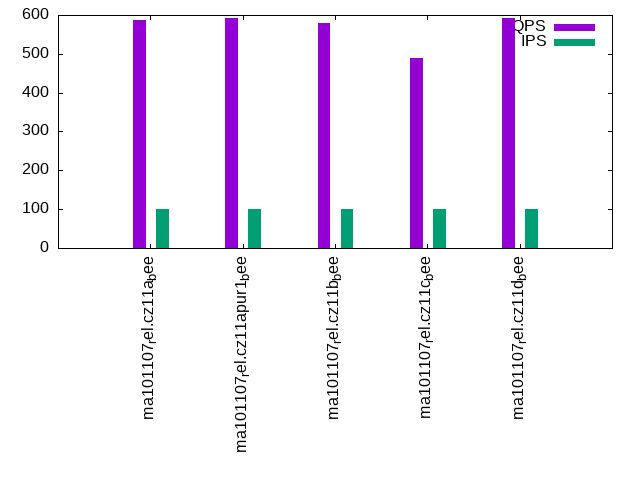
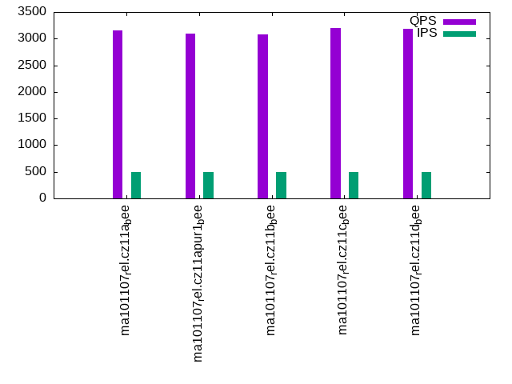
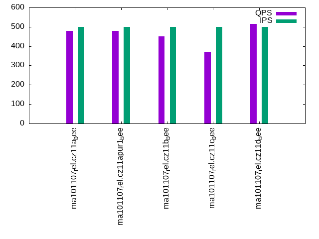
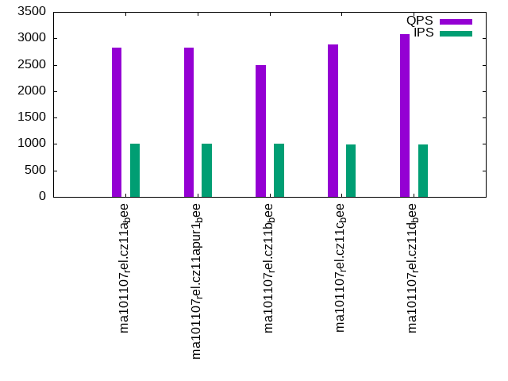
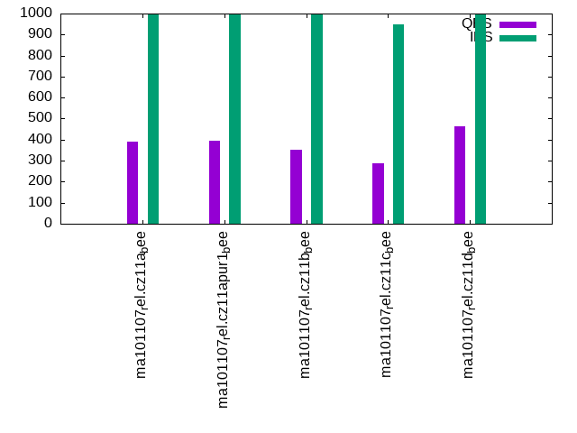

This is a report for the insert benchmark with 800M docs and 1 client(s). It is generated by scripts (bash, awk, sed) and Tufte might not be impressed. An overview of the insert benchmark is here and a short update is here. Below, by DBMS, I mean DBMS+version.config. An example is my8020.c10b40 where my means MySQL, 8020 is version 8.0.20 and c10b40 is the name for the configuration file.
The test server has 8 AMD cores, 16G RAM and an NVMe SSD. It is described here as the Beelink. The benchmark was run with 1 client and there were 1 or 3 connections per client (1 for queries or inserts without rate limits, 1+1 for rate limited inserts+deletes). It uses 1 table. It loads 800M rows per table without secondary indexes, creates 3 secondary indexes per table, then inserts 4m+1m rows per table with a delete per insert to avoid growing the table. It then does 6 read+write tests for 1800s each that do queries as fast as possible with 100,100,500,500,1000,1000 inserts/s and the same for deletes/s per client concurrent with the queries. The database is larger than memory. Clients and the DBMS share one server. The per-database configs are in the per-database subdirectories here.
The tested DBMS are:
The numbers are inserts/s for l.i0, l.i1 and l.i2, indexed docs (or rows) /s for l.x and queries/s for qr100, qp100 thru qr1000, qp1000" The values are the average rate over the entire test for inserts (IPS) and queries (QPS). The range of values for IPS and QPS is split into 3 parts: bottom 25%, middle 50%, top 25%. Values in the bottom 25% have a red background, values in the top 25% have a green background and values in the middle have no color. A gray background is used for values that can be ignored because the DBMS did not sustain the target insert rate. Red backgrounds are not used when the minimum value is within 80% of the max value.
| dbms | l.i0 | l.x | l.i1 | l.i2 | qr100 | qp100 | qr500 | qp500 | qr1000 | qp1000 |
|---|---|---|---|---|---|---|---|---|---|---|
| ma101107_rel.cz11a_bee | 78194 | 98888 | 1070 | 1167 | 3355 | 588 | 3148 | 478 | 2822 | 391 |
| ma101107_rel.cz11apur1_bee | 79404 | 98826 | 1064 | 1170 | 3328 | 591 | 3088 | 479 | 2831 | 394 |
| ma101107_rel.cz11b_bee | 77768 | 98765 | 961 | 1027 | 3326 | 579 | 3074 | 450 | 2500 | 354 |
| ma101107_rel.cz11c_bee | 76805 | 98998 | 719 | 735 | 3380 | 490 | 3197 | 370 | 2879 | 286 |
| ma101107_rel.cz11d_bee | 78647 | 98985 | 1340 | 1701 | 3321 | 592 | 3189 | 514 | 3086 | 463 |
This table has relative throughput, throughput for the DBMS relative to the DBMS in the first line, using the absolute throughput from the previous table. Values less than 0.95 have a yellow background. Values greater than 1.05 have a blue background.
| dbms | l.i0 | l.x | l.i1 | l.i2 | qr100 | qp100 | qr500 | qp500 | qr1000 | qp1000 |
|---|---|---|---|---|---|---|---|---|---|---|
| ma101107_rel.cz11a_bee | 1.00 | 1.00 | 1.00 | 1.00 | 1.00 | 1.00 | 1.00 | 1.00 | 1.00 | 1.00 |
| ma101107_rel.cz11apur1_bee | 1.02 | 1.00 | 0.99 | 1.00 | 0.99 | 1.01 | 0.98 | 1.00 | 1.00 | 1.01 |
| ma101107_rel.cz11b_bee | 0.99 | 1.00 | 0.90 | 0.88 | 0.99 | 0.98 | 0.98 | 0.94 | 0.89 | 0.91 |
| ma101107_rel.cz11c_bee | 0.98 | 1.00 | 0.67 | 0.63 | 1.01 | 0.83 | 1.02 | 0.77 | 1.02 | 0.73 |
| ma101107_rel.cz11d_bee | 1.01 | 1.00 | 1.25 | 1.46 | 0.99 | 1.01 | 1.01 | 1.08 | 1.09 | 1.18 |
This lists the average rate of inserts/s for the tests that do inserts concurrent with queries. For such tests the query rate is listed in the table above. The read+write tests are setup so that the insert rate should match the target rate every second. Cells that are not at least 95% of the target have a red background to indicate a failure to satisfy the target.
| dbms | qr100.L1 | qp100.L2 | qr500.L3 | qp500.L4 | qr1000.L5 | qp1000.L6 |
|---|---|---|---|---|---|---|
| ma101107_rel.cz11a_bee | 100 | 100 | 499 | 499 | 999 | 998 |
| ma101107_rel.cz11apur1_bee | 100 | 100 | 499 | 499 | 999 | 998 |
| ma101107_rel.cz11b_bee | 100 | 100 | 499 | 499 | 999 | 999 |
| ma101107_rel.cz11c_bee | 100 | 100 | 499 | 499 | 984 | 948 |
| ma101107_rel.cz11d_bee | 100 | 100 | 499 | 499 | 998 | 999 |
| target | 100 | 100 | 500 | 500 | 1000 | 1000 |
l.i0: load without secondary indexes. Graphs for performance per 1-second interval are here.
Average throughput:
Insert response time histogram: each cell has the percentage of responses that take <= the time in the header and max is the max response time in seconds. For the max column values in the top 25% of the range have a red background and in the bottom 25% of the range have a green background. The red background is not used when the min value is within 80% of the max value.
| dbms | 256us | 1ms | 4ms | 16ms | 64ms | 256ms | 1s | 4s | 16s | gt | max |
|---|---|---|---|---|---|---|---|---|---|---|---|
| ma101107_rel.cz11a_bee | 0.743 | 99.006 | 0.201 | 0.046 | 0.004 | 0.210 | |||||
| ma101107_rel.cz11apur1_bee | 1.015 | 98.736 | 0.212 | 0.033 | 0.004 | 0.188 | |||||
| ma101107_rel.cz11b_bee | 0.612 | 99.129 | 0.214 | 0.040 | 0.005 | 0.236 | |||||
| ma101107_rel.cz11c_bee | 0.561 | 99.169 | 0.206 | 0.044 | 0.019 | nonzero | 0.288 | ||||
| ma101107_rel.cz11d_bee | 0.715 | 99.037 | 0.210 | 0.034 | 0.004 | 0.198 |
Performance metrics for the DBMS listed above. Some are normalized by throughput, others are not. Legend for results is here.
ips qps rps rmbps wps wmbps rpq rkbpq wpi wkbpi csps cpups cspq cpupq dbgb1 dbgb2 rss maxop p50 p99 tag 78194 0 600 2.3 388.5 22.9 0.008 0.031 0.005 0.300 11954 25.6 0.153 26 52.6 68.4 10.3 0.210 78313 68622 ma101107_rel.cz11a_bee 79404 0 608 2.4 394.8 23.2 0.008 0.031 0.005 0.300 11483 25.4 0.145 26 52.6 68.4 10.3 0.188 79612 69423 ma101107_rel.cz11apur1_bee 77768 0 597 2.3 392.1 22.7 0.008 0.031 0.005 0.300 11935 25.6 0.153 26 52.6 68.4 10.3 0.236 77954 67823 ma101107_rel.cz11b_bee 76805 0 589 2.3 80.1 22.5 0.008 0.031 0.001 0.300 11748 25.3 0.153 26 52.6 68.4 10.3 0.288 78114 60032 ma101107_rel.cz11c_bee 78647 0 602 2.4 390.9 23.0 0.008 0.031 0.005 0.300 12034 25.7 0.153 26 52.6 68.4 10.3 0.198 78910 68957 ma101107_rel.cz11d_bee
l.x: create secondary indexes.
Average throughput:
Performance metrics for the DBMS listed above. Some are normalized by throughput, others are not. Legend for results is here.
ips qps rps rmbps wps wmbps rpq rkbpq wpi wkbpi csps cpups cspq cpupq dbgb1 dbgb2 rss maxop p50 p99 tag 98888 0 632 99.9 730.6 111.1 0.006 1.034 0.007 1.151 3320 11.9 0.034 10 119.9 135.7 10.3 0.002 NA NA ma101107_rel.cz11a_bee 98826 0 640 99.8 734.9 111.1 0.006 1.034 0.007 1.151 3347 11.8 0.034 10 119.9 135.7 10.3 0.002 NA NA ma101107_rel.cz11apur1_bee 98765 0 634 99.8 727.6 111.0 0.006 1.035 0.007 1.151 3343 11.9 0.034 10 119.9 135.7 10.3 0.002 NA NA ma101107_rel.cz11b_bee 98998 0 319 100.0 290.0 111.1 0.003 1.034 0.003 1.149 2527 12.0 0.026 10 119.9 135.7 10.3 0.002 NA NA ma101107_rel.cz11c_bee 98985 0 644 100.0 736.9 111.2 0.007 1.034 0.007 1.151 3341 11.9 0.034 10 119.9 135.7 10.3 0.002 NA NA ma101107_rel.cz11d_bee
l.i1: continue load after secondary indexes created with 50 inserts per transaction. Graphs for performance per 1-second interval are here.
Average throughput:
Insert response time histogram: each cell has the percentage of responses that take <= the time in the header and max is the max response time in seconds. For the max column values in the top 25% of the range have a red background and in the bottom 25% of the range have a green background. The red background is not used when the min value is within 80% of the max value.
| dbms | 256us | 1ms | 4ms | 16ms | 64ms | 256ms | 1s | 4s | 16s | gt | max |
|---|---|---|---|---|---|---|---|---|---|---|---|
| ma101107_rel.cz11a_bee | 84.365 | 15.629 | 0.005 | 0.001 | 3.772 | ||||||
| ma101107_rel.cz11apur1_bee | 84.388 | 15.609 | 0.003 | 0.001 | 3.995 | ||||||
| ma101107_rel.cz11b_bee | 77.414 | 22.541 | 0.044 | 0.001 | 4.085 | ||||||
| ma101107_rel.cz11c_bee | 65.310 | 32.653 | 2.024 | 0.013 | 0.001 | 6.514 | |||||
| ma101107_rel.cz11d_bee | 9.420 | 79.530 | 11.048 | 0.001 | 0.001 | 4.074 |
Delete response time histogram: each cell has the percentage of responses that take <= the time in the header and max is the max response time in seconds. For the max column values in the top 25% of the range have a red background and in the bottom 25% of the range have a green background. The red background is not used when the min value is within 80% of the max value.
| dbms | 256us | 1ms | 4ms | 16ms | 64ms | 256ms | 1s | 4s | 16s | gt | max |
|---|---|---|---|---|---|---|---|---|---|---|---|
| ma101107_rel.cz11a_bee | 4.051 | 85.021 | 10.926 | 0.001 | 3.712 | ||||||
| ma101107_rel.cz11apur1_bee | 4.011 | 85.191 | 10.796 | 0.001 | 3.951 | ||||||
| ma101107_rel.cz11b_bee | 3.084 | 88.833 | 8.066 | 0.016 | 0.001 | 4.021 | |||||
| ma101107_rel.cz11c_bee | 3.739 | 91.502 | 3.609 | 1.148 | 0.001 | 0.001 | 6.349 | ||||
| ma101107_rel.cz11d_bee | 0.579 | 93.454 | 2.904 | 3.062 | 0.001 | 3.989 |
Performance metrics for the DBMS listed above. Some are normalized by throughput, others are not. Legend for results is here.
ips qps rps rmbps wps wmbps rpq rkbpq wpi wkbpi csps cpups cspq cpupq dbgb1 dbgb2 rss maxop p50 p99 tag 1070 0 6860 106.5 6305.4 186.7 6.412 101.951 5.894 178.714 60663 11.8 56.705 882 144.4 160.2 10.1 3.772 1099 749 ma101107_rel.cz11a_bee 1064 0 6822 105.9 6294.9 185.8 6.413 101.958 5.917 178.805 60310 11.8 56.693 887 144.4 160.2 10.1 3.995 1099 749 ma101107_rel.cz11apur1_bee 961 0 6153 95.6 5812.3 169.3 6.404 101.838 6.049 180.481 54631 10.4 56.860 866 144.4 160.2 10.1 4.085 949 550 ma101107_rel.cz11b_bee 719 0 4542 79.7 3943.6 128.4 6.318 113.466 5.486 182.863 49011 12.1 68.176 1347 144.4 160.2 10.1 6.514 700 250 ma101107_rel.cz11c_bee 1340 0 5936 91.9 6595.4 192.7 4.432 70.292 4.924 147.290 59527 13.4 44.439 800 148.8 165.0 10.8 4.074 1249 749 ma101107_rel.cz11d_bee
l.i2: continue load after secondary indexes created with 5 inserts per transaction. Graphs for performance per 1-second interval are here.
Average throughput:
Insert response time histogram: each cell has the percentage of responses that take <= the time in the header and max is the max response time in seconds. For the max column values in the top 25% of the range have a red background and in the bottom 25% of the range have a green background. The red background is not used when the min value is within 80% of the max value.
| dbms | 256us | 1ms | 4ms | 16ms | 64ms | 256ms | 1s | 4s | 16s | gt | max |
|---|---|---|---|---|---|---|---|---|---|---|---|
| ma101107_rel.cz11a_bee | 0.001 | 89.945 | 8.538 | 0.428 | 1.088 | 0.141 | |||||
| ma101107_rel.cz11apur1_bee | 0.004 | 90.087 | 8.430 | 0.402 | 1.077 | 0.140 | |||||
| ma101107_rel.cz11b_bee | 0.001 | 70.451 | 27.595 | 1.073 | 0.881 | 0.142 | |||||
| ma101107_rel.cz11c_bee | 0.001 | 48.906 | 47.631 | 1.871 | 1.580 | 0.011 | 0.380 | ||||
| ma101107_rel.cz11d_bee | 4.078 | 89.970 | 5.248 | 0.154 | 0.549 | 0.173 |
Delete response time histogram: each cell has the percentage of responses that take <= the time in the header and max is the max response time in seconds. For the max column values in the top 25% of the range have a red background and in the bottom 25% of the range have a green background. The red background is not used when the min value is within 80% of the max value.
| dbms | 256us | 1ms | 4ms | 16ms | 64ms | 256ms | 1s | 4s | 16s | gt | max |
|---|---|---|---|---|---|---|---|---|---|---|---|
| ma101107_rel.cz11a_bee | 0.014 | 93.919 | 4.939 | 0.129 | 1.000 | 0.140 | |||||
| ma101107_rel.cz11apur1_bee | 0.015 | 94.005 | 4.864 | 0.133 | 0.985 | 0.134 | |||||
| ma101107_rel.cz11b_bee | 0.011 | 79.046 | 19.293 | 0.889 | 0.761 | 0.139 | |||||
| ma101107_rel.cz11c_bee | 0.002 | 76.409 | 21.084 | 1.336 | 1.169 | 0.001 | 0.377 | ||||
| ma101107_rel.cz11d_bee | 6.868 | 91.195 | 1.412 | 0.081 | 0.443 | 0.168 |
Performance metrics for the DBMS listed above. Some are normalized by throughput, others are not. Legend for results is here.
ips qps rps rmbps wps wmbps rpq rkbpq wpi wkbpi csps cpups cspq cpupq dbgb1 dbgb2 rss maxop p50 p99 tag 1167 0 7189 108.2 6038.7 182.6 6.161 94.946 5.175 160.232 63665 14.8 54.564 1015 144.4 160.2 10.1 0.141 1174 989 ma101107_rel.cz11a_bee 1170 0 7198 108.3 6097.3 183.7 6.155 94.842 5.214 160.844 63752 14.8 54.512 1012 144.4 160.2 10.1 0.140 1174 994 ma101107_rel.cz11apur1_bee 1027 0 6327 95.2 5388.9 159.2 6.163 94.924 5.249 158.748 55896 13.0 54.448 1013 144.4 160.2 10.1 0.142 1069 459 ma101107_rel.cz11b_bee 735 0 4473 69.2 3799.0 113.6 6.084 96.436 5.167 158.273 46341 13.9 63.032 1512 144.4 160.2 8.9 0.380 839 45 ma101107_rel.cz11c_bee 1701 0 5877 85.5 6142.1 184.9 3.456 51.486 3.612 111.360 62721 20.0 36.882 941 148.8 165.4 11.0 0.173 1703 1458 ma101107_rel.cz11d_bee
qr100.L1: range queries with 100 insert/s per client. Graphs for performance per 1-second interval are here.
Average throughput:
Query response time histogram: each cell has the percentage of responses that take <= the time in the header and max is the max response time in seconds. For max values in the top 25% of the range have a red background and in the bottom 25% of the range have a green background. The red background is not used when the min value is within 80% of the max value.
| dbms | 256us | 1ms | 4ms | 16ms | 64ms | 256ms | 1s | 4s | 16s | gt | max |
|---|---|---|---|---|---|---|---|---|---|---|---|
| ma101107_rel.cz11a_bee | 44.006 | 55.780 | 0.188 | 0.023 | 0.001 | 0.001 | 0.090 | ||||
| ma101107_rel.cz11apur1_bee | 41.075 | 58.713 | 0.186 | 0.024 | 0.002 | 0.001 | 0.090 | ||||
| ma101107_rel.cz11b_bee | 40.395 | 59.379 | 0.199 | 0.025 | 0.001 | 0.001 | 0.091 | ||||
| ma101107_rel.cz11c_bee | 45.784 | 53.980 | 0.198 | 0.035 | 0.003 | 0.001 | 0.103 | ||||
| ma101107_rel.cz11d_bee | 38.541 | 61.239 | 0.191 | 0.028 | 0.001 | 0.001 | 0.088 |
Insert response time histogram: each cell has the percentage of responses that take <= the time in the header and max is the max response time in seconds. For max values in the top 25% of the range have a red background and in the bottom 25% of the range have a green background. The red background is not used when the min value is within 80% of the max value.
| dbms | 256us | 1ms | 4ms | 16ms | 64ms | 256ms | 1s | 4s | 16s | gt | max |
|---|---|---|---|---|---|---|---|---|---|---|---|
| ma101107_rel.cz11a_bee | 0.222 | 93.917 | 5.861 | 0.123 | |||||||
| ma101107_rel.cz11apur1_bee | 0.083 | 94.278 | 5.639 | 0.126 | |||||||
| ma101107_rel.cz11b_bee | 0.167 | 94.000 | 5.833 | 0.135 | |||||||
| ma101107_rel.cz11c_bee | 92.889 | 7.111 | 0.181 | ||||||||
| ma101107_rel.cz11d_bee | 51.861 | 45.889 | 2.250 | 0.121 |
Delete response time histogram: each cell has the percentage of responses that take <= the time in the header and max is the max response time in seconds. For max values in the top 25% of the range have a red background and in the bottom 25% of the range have a green background. The red background is not used when the min value is within 80% of the max value.
| dbms | 256us | 1ms | 4ms | 16ms | 64ms | 256ms | 1s | 4s | 16s | gt | max |
|---|---|---|---|---|---|---|---|---|---|---|---|
| ma101107_rel.cz11a_bee | 44.806 | 50.972 | 4.222 | 0.115 | |||||||
| ma101107_rel.cz11apur1_bee | 44.306 | 51.694 | 4.000 | 0.115 | |||||||
| ma101107_rel.cz11b_bee | 44.694 | 50.778 | 4.528 | 0.126 | |||||||
| ma101107_rel.cz11c_bee | 29.111 | 65.500 | 5.389 | 0.150 | |||||||
| ma101107_rel.cz11d_bee | 5.778 | 93.194 | 0.722 | 0.306 | 0.101 |
Performance metrics for the DBMS listed above. Some are normalized by throughput, others are not. Legend for results is here.
ips qps rps rmbps wps wmbps rpq rkbpq wpi wkbpi csps cpups cspq cpupq dbgb1 dbgb2 rss maxop p50 p99 tag 100 3355 637 9.9 258.5 8.3 0.190 3.022 2.593 84.817 16598 13.1 4.947 312 144.4 160.2 10.1 0.090 3356 2573 ma101107_rel.cz11a_bee 100 3328 637 9.9 261.3 8.3 0.191 3.044 2.618 85.292 16485 13.1 4.953 315 144.4 160.2 10.1 0.090 3324 2543 ma101107_rel.cz11apur1_bee 100 3326 636 9.9 263.4 8.3 0.191 3.046 2.640 84.677 16483 13.1 4.955 315 144.4 160.2 10.1 0.091 3324 2461 ma101107_rel.cz11b_bee 100 3380 627 10.4 261.7 8.2 0.185 3.140 2.622 84.579 17147 13.6 5.073 322 144.4 160.2 9.9 0.103 3372 2125 ma101107_rel.cz11c_bee 100 3321 373 5.8 151.3 5.0 0.112 1.782 1.516 51.743 15057 13.0 4.534 313 148.8 165.4 10.1 0.088 3324 2317 ma101107_rel.cz11d_bee
qp100.L2: point queries with 100 insert/s per client. Graphs for performance per 1-second interval are here.
Average throughput:
Query response time histogram: each cell has the percentage of responses that take <= the time in the header and max is the max response time in seconds. For max values in the top 25% of the range have a red background and in the bottom 25% of the range have a green background. The red background is not used when the min value is within 80% of the max value.
| dbms | 256us | 1ms | 4ms | 16ms | 64ms | 256ms | 1s | 4s | 16s | gt | max |
|---|---|---|---|---|---|---|---|---|---|---|---|
| ma101107_rel.cz11a_bee | 0.213 | 99.139 | 0.251 | 0.392 | 0.006 | 0.086 | |||||
| ma101107_rel.cz11apur1_bee | 0.237 | 99.115 | 0.251 | 0.391 | 0.006 | 0.086 | |||||
| ma101107_rel.cz11b_bee | 0.196 | 99.039 | 0.368 | 0.391 | 0.006 | 0.083 | |||||
| ma101107_rel.cz11c_bee | 0.023 | 97.695 | 1.838 | 0.438 | 0.006 | 0.187 | |||||
| ma101107_rel.cz11d_bee | 0.223 | 99.263 | 0.136 | 0.372 | 0.007 | 0.086 |
Insert response time histogram: each cell has the percentage of responses that take <= the time in the header and max is the max response time in seconds. For max values in the top 25% of the range have a red background and in the bottom 25% of the range have a green background. The red background is not used when the min value is within 80% of the max value.
| dbms | 256us | 1ms | 4ms | 16ms | 64ms | 256ms | 1s | 4s | 16s | gt | max |
|---|---|---|---|---|---|---|---|---|---|---|---|
| ma101107_rel.cz11a_bee | 98.194 | 1.806 | 0.100 | ||||||||
| ma101107_rel.cz11apur1_bee | 98.000 | 2.000 | 0.107 | ||||||||
| ma101107_rel.cz11b_bee | 96.917 | 3.083 | 0.105 | ||||||||
| ma101107_rel.cz11c_bee | 88.333 | 11.639 | 0.028 | 0.369 | |||||||
| ma101107_rel.cz11d_bee | 68.639 | 30.472 | 0.889 | 0.099 |
Delete response time histogram: each cell has the percentage of responses that take <= the time in the header and max is the max response time in seconds. For max values in the top 25% of the range have a red background and in the bottom 25% of the range have a green background. The red background is not used when the min value is within 80% of the max value.
| dbms | 256us | 1ms | 4ms | 16ms | 64ms | 256ms | 1s | 4s | 16s | gt | max |
|---|---|---|---|---|---|---|---|---|---|---|---|
| ma101107_rel.cz11a_bee | 42.000 | 57.139 | 0.861 | 0.092 | |||||||
| ma101107_rel.cz11apur1_bee | 38.556 | 60.361 | 1.083 | 0.096 | |||||||
| ma101107_rel.cz11b_bee | 38.056 | 60.417 | 1.528 | 0.099 | |||||||
| ma101107_rel.cz11c_bee | 28.917 | 64.889 | 6.167 | 0.028 | 0.365 | ||||||
| ma101107_rel.cz11d_bee | 6.528 | 88.667 | 4.722 | 0.083 | 0.085 |
Performance metrics for the DBMS listed above. Some are normalized by throughput, others are not. Legend for results is here.
ips qps rps rmbps wps wmbps rpq rkbpq wpi wkbpi csps cpups cspq cpupq dbgb1 dbgb2 rss maxop p50 p99 tag 100 588 5876 91.8 735.1 21.8 9.985 159.655 7.366 223.556 18767 5.4 31.890 734 144.4 160.2 10.1 0.086 591 495 ma101107_rel.cz11a_bee 100 591 5898 92.1 743.0 22.0 9.981 159.596 7.445 225.337 18838 5.3 31.880 718 144.4 160.2 10.1 0.086 592 495 ma101107_rel.cz11apur1_bee 100 579 5799 90.5 755.7 21.9 10.015 160.138 7.572 224.746 18619 5.4 32.156 746 144.4 160.2 10.1 0.083 591 479 ma101107_rel.cz11b_bee 100 490 5017 79.5 734.8 21.5 10.230 165.961 7.362 220.231 19644 6.4 40.057 1044 144.4 160.2 9.1 0.187 495 416 ma101107_rel.cz11c_bee 100 592 5629 87.9 592.9 17.2 9.501 151.921 5.941 176.913 17172 5.1 28.983 689 148.8 165.4 10.1 0.086 607 495 ma101107_rel.cz11d_bee
qr500.L3: range queries with 500 insert/s per client. Graphs for performance per 1-second interval are here.
Average throughput:
Query response time histogram: each cell has the percentage of responses that take <= the time in the header and max is the max response time in seconds. For max values in the top 25% of the range have a red background and in the bottom 25% of the range have a green background. The red background is not used when the min value is within 80% of the max value.
| dbms | 256us | 1ms | 4ms | 16ms | 64ms | 256ms | 1s | 4s | 16s | gt | max |
|---|---|---|---|---|---|---|---|---|---|---|---|
| ma101107_rel.cz11a_bee | 43.290 | 56.358 | 0.279 | 0.053 | 0.008 | 0.011 | 0.092 | ||||
| ma101107_rel.cz11apur1_bee | 39.009 | 60.627 | 0.289 | 0.054 | 0.008 | 0.013 | 0.092 | ||||
| ma101107_rel.cz11b_bee | 39.444 | 60.080 | 0.387 | 0.070 | 0.008 | 0.010 | 0.094 | ||||
| ma101107_rel.cz11c_bee | 44.480 | 55.132 | 0.286 | 0.081 | 0.013 | 0.009 | 0.189 | ||||
| ma101107_rel.cz11d_bee | 38.757 | 60.948 | 0.232 | 0.050 | 0.005 | 0.008 | 0.096 |
Insert response time histogram: each cell has the percentage of responses that take <= the time in the header and max is the max response time in seconds. For max values in the top 25% of the range have a red background and in the bottom 25% of the range have a green background. The red background is not used when the min value is within 80% of the max value.
| dbms | 256us | 1ms | 4ms | 16ms | 64ms | 256ms | 1s | 4s | 16s | gt | max |
|---|---|---|---|---|---|---|---|---|---|---|---|
| ma101107_rel.cz11a_bee | 10.700 | 80.672 | 8.628 | 0.143 | |||||||
| ma101107_rel.cz11apur1_bee | 9.467 | 81.817 | 8.717 | 0.125 | |||||||
| ma101107_rel.cz11b_bee | 7.750 | 83.594 | 8.656 | 0.144 | |||||||
| ma101107_rel.cz11c_bee | 0.128 | 91.144 | 8.722 | 0.006 | 0.330 | ||||||
| ma101107_rel.cz11d_bee | 85.667 | 11.428 | 2.906 | 0.123 |
Delete response time histogram: each cell has the percentage of responses that take <= the time in the header and max is the max response time in seconds. For max values in the top 25% of the range have a red background and in the bottom 25% of the range have a green background. The red background is not used when the min value is within 80% of the max value.
| dbms | 256us | 1ms | 4ms | 16ms | 64ms | 256ms | 1s | 4s | 16s | gt | max |
|---|---|---|---|---|---|---|---|---|---|---|---|
| ma101107_rel.cz11a_bee | 68.717 | 23.778 | 7.506 | 0.119 | |||||||
| ma101107_rel.cz11apur1_bee | 68.483 | 23.883 | 7.633 | 0.118 | |||||||
| ma101107_rel.cz11b_bee | 61.761 | 31.111 | 7.128 | 0.124 | |||||||
| ma101107_rel.cz11c_bee | 58.922 | 35.628 | 5.439 | 0.011 | 0.322 | ||||||
| ma101107_rel.cz11d_bee | 16.217 | 82.450 | 0.344 | 0.989 | 0.106 |
Performance metrics for the DBMS listed above. Some are normalized by throughput, others are not. Legend for results is here.
ips qps rps rmbps wps wmbps rpq rkbpq wpi wkbpi csps cpups cspq cpupq dbgb1 dbgb2 rss maxop p50 p99 tag 499 3148 2960 46.0 2284.1 69.4 0.940 14.960 4.576 142.347 34921 15.6 11.091 396 144.4 160.2 10.1 0.092 3164 1950 ma101107_rel.cz11a_bee 499 3088 2958 46.0 2284.1 69.2 0.958 15.247 4.577 141.881 34634 15.6 11.217 404 144.4 160.2 10.1 0.092 3116 1966 ma101107_rel.cz11apur1_bee 499 3074 2958 46.0 2346.8 69.8 0.962 15.311 4.702 143.226 34884 15.7 11.347 409 144.4 160.2 10.1 0.094 3100 1903 ma101107_rel.cz11b_bee 499 3197 2905 46.8 2347.3 70.1 0.909 14.989 4.703 143.784 37031 18.1 11.584 453 144.4 160.2 9.0 0.189 3244 1327 ma101107_rel.cz11c_bee 499 3189 1616 25.0 1645.5 49.8 0.507 8.032 3.297 102.213 26992 15.2 8.464 381 148.8 165.6 10.1 0.096 3213 2285 ma101107_rel.cz11d_bee
qp500.L4: point queries with 500 insert/s per client. Graphs for performance per 1-second interval are here.
Average throughput:
Query response time histogram: each cell has the percentage of responses that take <= the time in the header and max is the max response time in seconds. For max values in the top 25% of the range have a red background and in the bottom 25% of the range have a green background. The red background is not used when the min value is within 80% of the max value.
| dbms | 256us | 1ms | 4ms | 16ms | 64ms | 256ms | 1s | 4s | 16s | gt | max |
|---|---|---|---|---|---|---|---|---|---|---|---|
| ma101107_rel.cz11a_bee | 0.011 | 97.738 | 1.621 | 0.613 | 0.016 | 0.082 | |||||
| ma101107_rel.cz11apur1_bee | 0.013 | 97.763 | 1.596 | 0.614 | 0.014 | 0.084 | |||||
| ma101107_rel.cz11b_bee | 0.011 | 95.929 | 3.448 | 0.599 | 0.014 | 0.101 | |||||
| ma101107_rel.cz11c_bee | nonzero | 91.460 | 7.959 | 0.410 | 0.171 | 0.215 | |||||
| ma101107_rel.cz11d_bee | 0.031 | 98.492 | 0.987 | 0.483 | 0.009 | 0.086 |
Insert response time histogram: each cell has the percentage of responses that take <= the time in the header and max is the max response time in seconds. For max values in the top 25% of the range have a red background and in the bottom 25% of the range have a green background. The red background is not used when the min value is within 80% of the max value.
| dbms | 256us | 1ms | 4ms | 16ms | 64ms | 256ms | 1s | 4s | 16s | gt | max |
|---|---|---|---|---|---|---|---|---|---|---|---|
| ma101107_rel.cz11a_bee | 7.961 | 76.528 | 15.511 | 0.144 | |||||||
| ma101107_rel.cz11apur1_bee | 6.717 | 77.400 | 15.883 | 0.147 | |||||||
| ma101107_rel.cz11b_bee | 5.956 | 80.778 | 13.267 | 0.177 | |||||||
| ma101107_rel.cz11c_bee | 0.028 | 85.283 | 14.656 | 0.033 | 0.330 | ||||||
| ma101107_rel.cz11d_bee | 92.939 | 2.311 | 4.750 | 0.110 |
Delete response time histogram: each cell has the percentage of responses that take <= the time in the header and max is the max response time in seconds. For max values in the top 25% of the range have a red background and in the bottom 25% of the range have a green background. The red background is not used when the min value is within 80% of the max value.
| dbms | 256us | 1ms | 4ms | 16ms | 64ms | 256ms | 1s | 4s | 16s | gt | max |
|---|---|---|---|---|---|---|---|---|---|---|---|
| ma101107_rel.cz11a_bee | 81.800 | 6.667 | 11.533 | 0.144 | |||||||
| ma101107_rel.cz11apur1_bee | 80.411 | 6.750 | 12.839 | 0.144 | |||||||
| ma101107_rel.cz11b_bee | 61.133 | 28.428 | 10.439 | 0.150 | |||||||
| ma101107_rel.cz11c_bee | 31.550 | 60.711 | 7.717 | 0.022 | 0.296 | ||||||
| ma101107_rel.cz11d_bee | 25.156 | 71.933 | 1.756 | 1.156 | 0.096 |
Performance metrics for the DBMS listed above. Some are normalized by throughput, others are not. Legend for results is here.
ips qps rps rmbps wps wmbps rpq rkbpq wpi wkbpi csps cpups cspq cpupq dbgb1 dbgb2 rss maxop p50 p99 tag 499 478 7543 117.6 2566.1 77.4 15.770 251.809 5.141 158.708 35072 8.4 73.326 1405 144.4 160.2 10.1 0.082 479 447 ma101107_rel.cz11a_bee 499 479 7555 117.8 2577.9 77.5 15.760 251.651 5.165 158.935 35103 8.3 73.223 1385 144.4 160.2 10.1 0.084 479 447 ma101107_rel.cz11apur1_bee 499 450 7281 113.5 2607.8 77.1 16.199 258.617 5.225 158.242 34790 8.3 77.398 1477 144.4 160.2 10.1 0.101 448 400 ma101107_rel.cz11b_bee 499 370 6485 102.5 2582.3 76.6 17.522 283.531 5.174 157.128 41215 11.6 111.362 2507 144.4 160.2 8.9 0.215 368 272 ma101107_rel.cz11c_bee 499 514 6390 99.6 1739.0 52.1 12.436 198.502 3.484 106.984 26337 7.7 51.259 1199 148.8 165.9 10.2 0.086 511 479 ma101107_rel.cz11d_bee
qr1000.L5: range queries with 1000 insert/s per client. Graphs for performance per 1-second interval are here.
Average throughput:
Query response time histogram: each cell has the percentage of responses that take <= the time in the header and max is the max response time in seconds. For max values in the top 25% of the range have a red background and in the bottom 25% of the range have a green background. The red background is not used when the min value is within 80% of the max value.
| dbms | 256us | 1ms | 4ms | 16ms | 64ms | 256ms | 1s | 4s | 16s | gt | max |
|---|---|---|---|---|---|---|---|---|---|---|---|
| ma101107_rel.cz11a_bee | 39.160 | 60.185 | 0.551 | 0.054 | 0.020 | 0.030 | 0.092 | ||||
| ma101107_rel.cz11apur1_bee | 38.805 | 60.534 | 0.557 | 0.055 | 0.019 | 0.030 | 0.091 | ||||
| ma101107_rel.cz11b_bee | 33.053 | 64.680 | 2.096 | 0.110 | 0.033 | 0.028 | 0.111 | ||||
| ma101107_rel.cz11c_bee | 44.824 | 54.094 | 0.865 | 0.164 | 0.041 | 0.013 | 0.127 | ||||
| ma101107_rel.cz11d_bee | 38.187 | 61.460 | 0.290 | 0.041 | 0.005 | 0.016 | 0.096 |
Insert response time histogram: each cell has the percentage of responses that take <= the time in the header and max is the max response time in seconds. For max values in the top 25% of the range have a red background and in the bottom 25% of the range have a green background. The red background is not used when the min value is within 80% of the max value.
| dbms | 256us | 1ms | 4ms | 16ms | 64ms | 256ms | 1s | 4s | 16s | gt | max |
|---|---|---|---|---|---|---|---|---|---|---|---|
| ma101107_rel.cz11a_bee | 24.103 | 66.731 | 9.167 | 0.235 | |||||||
| ma101107_rel.cz11apur1_bee | 22.194 | 68.600 | 9.206 | 0.192 | |||||||
| ma101107_rel.cz11b_bee | 1.247 | 88.600 | 10.153 | 0.165 | |||||||
| ma101107_rel.cz11c_bee | 90.506 | 9.400 | 0.094 | 0.349 | |||||||
| ma101107_rel.cz11d_bee | 93.597 | 4.247 | 2.156 | 0.166 |
Delete response time histogram: each cell has the percentage of responses that take <= the time in the header and max is the max response time in seconds. For max values in the top 25% of the range have a red background and in the bottom 25% of the range have a green background. The red background is not used when the min value is within 80% of the max value.
| dbms | 256us | 1ms | 4ms | 16ms | 64ms | 256ms | 1s | 4s | 16s | gt | max |
|---|---|---|---|---|---|---|---|---|---|---|---|
| ma101107_rel.cz11a_bee | 66.717 | 25.486 | 7.797 | 0.183 | |||||||
| ma101107_rel.cz11apur1_bee | 65.267 | 26.872 | 7.861 | 0.190 | |||||||
| ma101107_rel.cz11b_bee | 39.008 | 53.631 | 7.361 | 0.150 | |||||||
| ma101107_rel.cz11c_bee | 9.481 | 85.464 | 5.050 | 0.006 | 0.318 | ||||||
| ma101107_rel.cz11d_bee | 23.642 | 75.481 | 0.147 | 0.731 | 0.104 |
Performance metrics for the DBMS listed above. Some are normalized by throughput, others are not. Legend for results is here.
ips qps rps rmbps wps wmbps rpq rkbpq wpi wkbpi csps cpups cspq cpupq dbgb1 dbgb2 rss maxop p50 p99 tag 999 2822 5659 87.9 4580.9 138.7 2.005 31.902 4.586 142.228 56049 18.6 19.859 527 144.4 160.2 10.1 0.092 2861 1326 ma101107_rel.cz11a_bee 999 2831 5659 87.9 4597.8 138.7 1.999 31.810 4.603 142.243 56184 18.7 19.847 528 144.4 160.2 10.1 0.091 2861 1375 ma101107_rel.cz11apur1_bee 999 2500 5662 88.0 4698.9 139.6 2.265 36.034 4.705 143.108 55599 18.2 22.243 582 144.4 160.2 10.1 0.111 2589 1183 ma101107_rel.cz11b_bee 984 2879 5452 86.5 4623.1 137.4 1.894 30.783 4.700 143.066 64865 23.1 22.530 642 144.4 160.2 8.8 0.127 2957 991 ma101107_rel.cz11c_bee 998 3086 2656 41.0 3086.1 93.3 0.861 13.616 3.091 95.721 37720 17.8 12.225 462 148.8 166.6 10.1 0.096 3101 1774 ma101107_rel.cz11d_bee
qp1000.L6: point queries with 1000 insert/s per client. Graphs for performance per 1-second interval are here.
Average throughput:
Query response time histogram: each cell has the percentage of responses that take <= the time in the header and max is the max response time in seconds. For max values in the top 25% of the range have a red background and in the bottom 25% of the range have a green background. The red background is not used when the min value is within 80% of the max value.
| dbms | 256us | 1ms | 4ms | 16ms | 64ms | 256ms | 1s | 4s | 16s | gt | max |
|---|---|---|---|---|---|---|---|---|---|---|---|
| ma101107_rel.cz11a_bee | 0.001 | 95.332 | 3.700 | 0.232 | 0.733 | 0.100 | |||||
| ma101107_rel.cz11apur1_bee | 0.002 | 95.450 | 3.585 | 0.235 | 0.728 | 0.091 | |||||
| ma101107_rel.cz11b_bee | nonzero | 89.599 | 9.539 | 0.293 | 0.569 | 0.103 | |||||
| ma101107_rel.cz11c_bee | 80.800 | 18.366 | 0.703 | 0.131 | 0.001 | 0.279 | |||||
| ma101107_rel.cz11d_bee | 0.006 | 97.507 | 1.893 | 0.114 | 0.480 | 0.089 |
Insert response time histogram: each cell has the percentage of responses that take <= the time in the header and max is the max response time in seconds. For max values in the top 25% of the range have a red background and in the bottom 25% of the range have a green background. The red background is not used when the min value is within 80% of the max value.
| dbms | 256us | 1ms | 4ms | 16ms | 64ms | 256ms | 1s | 4s | 16s | gt | max |
|---|---|---|---|---|---|---|---|---|---|---|---|
| ma101107_rel.cz11a_bee | 9.456 | 75.803 | 14.742 | 0.178 | |||||||
| ma101107_rel.cz11apur1_bee | 10.592 | 74.628 | 14.781 | 0.177 | |||||||
| ma101107_rel.cz11b_bee | 0.103 | 84.844 | 15.053 | 0.176 | |||||||
| ma101107_rel.cz11c_bee | 85.133 | 14.606 | 0.261 | 0.684 | |||||||
| ma101107_rel.cz11d_bee | 91.400 | 3.503 | 5.097 | 0.165 |
Delete response time histogram: each cell has the percentage of responses that take <= the time in the header and max is the max response time in seconds. For max values in the top 25% of the range have a red background and in the bottom 25% of the range have a green background. The red background is not used when the min value is within 80% of the max value.
| dbms | 256us | 1ms | 4ms | 16ms | 64ms | 256ms | 1s | 4s | 16s | gt | max |
|---|---|---|---|---|---|---|---|---|---|---|---|
| ma101107_rel.cz11a_bee | 49.792 | 37.894 | 12.314 | 0.165 | |||||||
| ma101107_rel.cz11apur1_bee | 50.903 | 36.928 | 12.169 | 0.163 | |||||||
| ma101107_rel.cz11b_bee | 24.086 | 65.206 | 10.708 | 0.159 | |||||||
| ma101107_rel.cz11c_bee | 0.228 | 94.517 | 5.092 | 0.164 | 0.674 | ||||||
| ma101107_rel.cz11d_bee | 21.172 | 76.083 | 0.839 | 1.906 | 0.129 |
Performance metrics for the DBMS listed above. Some are normalized by throughput, others are not. Legend for results is here.
ips qps rps rmbps wps wmbps rpq rkbpq wpi wkbpi csps cpups cspq cpupq dbgb1 dbgb2 rss maxop p50 p99 tag 998 391 9569 149.0 4706.0 142.2 24.472 390.238 4.714 145.835 56258 12.2 143.883 2496 144.4 160.2 10.1 0.100 384 336 ma101107_rel.cz11a_bee 998 394 9597 149.5 4721.2 142.2 24.376 388.715 4.729 145.827 56257 12.2 142.894 2479 144.4 160.2 10.1 0.091 399 336 ma101107_rel.cz11apur1_bee 999 354 9197 143.2 4772.7 141.5 25.994 414.450 4.778 145.097 55279 11.7 156.245 2646 144.4 160.2 10.1 0.103 352 288 ma101107_rel.cz11b_bee 948 286 8080 127.1 4416.6 131.2 28.271 455.219 4.660 141.713 68080 16.2 238.208 4535 144.4 160.2 8.6 0.279 288 176 ma101107_rel.cz11c_bee 999 463 7054 109.8 2911.7 87.8 15.249 242.944 2.915 90.018 35754 10.5 77.289 1816 148.8 167.3 10.1 0.089 463 416 ma101107_rel.cz11d_bee
l.i0: load without secondary indexes
Performance metrics for all DBMS, not just the ones listed above. Some are normalized by throughput, others are not. Legend for results is here.
ips qps rps rmbps wps wmbps rpq rkbpq wpi wkbpi csps cpups cspq cpupq dbgb1 dbgb2 rss maxop p50 p99 tag 78194 0 600 2.3 388.5 22.9 0.008 0.031 0.005 0.300 11954 25.6 0.153 26 52.6 68.4 10.3 0.210 78313 68622 ma101107_rel.cz11a_bee 79404 0 608 2.4 394.8 23.2 0.008 0.031 0.005 0.300 11483 25.4 0.145 26 52.6 68.4 10.3 0.188 79612 69423 ma101107_rel.cz11apur1_bee 77768 0 597 2.3 392.1 22.7 0.008 0.031 0.005 0.300 11935 25.6 0.153 26 52.6 68.4 10.3 0.236 77954 67823 ma101107_rel.cz11b_bee 76805 0 589 2.3 80.1 22.5 0.008 0.031 0.001 0.300 11748 25.3 0.153 26 52.6 68.4 10.3 0.288 78114 60032 ma101107_rel.cz11c_bee 78647 0 602 2.4 390.9 23.0 0.008 0.031 0.005 0.300 12034 25.7 0.153 26 52.6 68.4 10.3 0.198 78910 68957 ma101107_rel.cz11d_bee
l.x: create secondary indexes
Performance metrics for all DBMS, not just the ones listed above. Some are normalized by throughput, others are not. Legend for results is here.
ips qps rps rmbps wps wmbps rpq rkbpq wpi wkbpi csps cpups cspq cpupq dbgb1 dbgb2 rss maxop p50 p99 tag 98888 0 632 99.9 730.6 111.1 0.006 1.034 0.007 1.151 3320 11.9 0.034 10 119.9 135.7 10.3 0.002 NA NA ma101107_rel.cz11a_bee 98826 0 640 99.8 734.9 111.1 0.006 1.034 0.007 1.151 3347 11.8 0.034 10 119.9 135.7 10.3 0.002 NA NA ma101107_rel.cz11apur1_bee 98765 0 634 99.8 727.6 111.0 0.006 1.035 0.007 1.151 3343 11.9 0.034 10 119.9 135.7 10.3 0.002 NA NA ma101107_rel.cz11b_bee 98998 0 319 100.0 290.0 111.1 0.003 1.034 0.003 1.149 2527 12.0 0.026 10 119.9 135.7 10.3 0.002 NA NA ma101107_rel.cz11c_bee 98985 0 644 100.0 736.9 111.2 0.007 1.034 0.007 1.151 3341 11.9 0.034 10 119.9 135.7 10.3 0.002 NA NA ma101107_rel.cz11d_bee
l.i1: continue load after secondary indexes created with 50 inserts per transaction
Performance metrics for all DBMS, not just the ones listed above. Some are normalized by throughput, others are not. Legend for results is here.
ips qps rps rmbps wps wmbps rpq rkbpq wpi wkbpi csps cpups cspq cpupq dbgb1 dbgb2 rss maxop p50 p99 tag 1070 0 6860 106.5 6305.4 186.7 6.412 101.951 5.894 178.714 60663 11.8 56.705 882 144.4 160.2 10.1 3.772 1099 749 ma101107_rel.cz11a_bee 1064 0 6822 105.9 6294.9 185.8 6.413 101.958 5.917 178.805 60310 11.8 56.693 887 144.4 160.2 10.1 3.995 1099 749 ma101107_rel.cz11apur1_bee 961 0 6153 95.6 5812.3 169.3 6.404 101.838 6.049 180.481 54631 10.4 56.860 866 144.4 160.2 10.1 4.085 949 550 ma101107_rel.cz11b_bee 719 0 4542 79.7 3943.6 128.4 6.318 113.466 5.486 182.863 49011 12.1 68.176 1347 144.4 160.2 10.1 6.514 700 250 ma101107_rel.cz11c_bee 1340 0 5936 91.9 6595.4 192.7 4.432 70.292 4.924 147.290 59527 13.4 44.439 800 148.8 165.0 10.8 4.074 1249 749 ma101107_rel.cz11d_bee
l.i2: continue load after secondary indexes created with 5 inserts per transaction
Performance metrics for all DBMS, not just the ones listed above. Some are normalized by throughput, others are not. Legend for results is here.
ips qps rps rmbps wps wmbps rpq rkbpq wpi wkbpi csps cpups cspq cpupq dbgb1 dbgb2 rss maxop p50 p99 tag 1167 0 7189 108.2 6038.7 182.6 6.161 94.946 5.175 160.232 63665 14.8 54.564 1015 144.4 160.2 10.1 0.141 1174 989 ma101107_rel.cz11a_bee 1170 0 7198 108.3 6097.3 183.7 6.155 94.842 5.214 160.844 63752 14.8 54.512 1012 144.4 160.2 10.1 0.140 1174 994 ma101107_rel.cz11apur1_bee 1027 0 6327 95.2 5388.9 159.2 6.163 94.924 5.249 158.748 55896 13.0 54.448 1013 144.4 160.2 10.1 0.142 1069 459 ma101107_rel.cz11b_bee 735 0 4473 69.2 3799.0 113.6 6.084 96.436 5.167 158.273 46341 13.9 63.032 1512 144.4 160.2 8.9 0.380 839 45 ma101107_rel.cz11c_bee 1701 0 5877 85.5 6142.1 184.9 3.456 51.486 3.612 111.360 62721 20.0 36.882 941 148.8 165.4 11.0 0.173 1703 1458 ma101107_rel.cz11d_bee
qr100.L1: range queries with 100 insert/s per client
Performance metrics for all DBMS, not just the ones listed above. Some are normalized by throughput, others are not. Legend for results is here.
ips qps rps rmbps wps wmbps rpq rkbpq wpi wkbpi csps cpups cspq cpupq dbgb1 dbgb2 rss maxop p50 p99 tag 100 3355 637 9.9 258.5 8.3 0.190 3.022 2.593 84.817 16598 13.1 4.947 312 144.4 160.2 10.1 0.090 3356 2573 ma101107_rel.cz11a_bee 100 3328 637 9.9 261.3 8.3 0.191 3.044 2.618 85.292 16485 13.1 4.953 315 144.4 160.2 10.1 0.090 3324 2543 ma101107_rel.cz11apur1_bee 100 3326 636 9.9 263.4 8.3 0.191 3.046 2.640 84.677 16483 13.1 4.955 315 144.4 160.2 10.1 0.091 3324 2461 ma101107_rel.cz11b_bee 100 3380 627 10.4 261.7 8.2 0.185 3.140 2.622 84.579 17147 13.6 5.073 322 144.4 160.2 9.9 0.103 3372 2125 ma101107_rel.cz11c_bee 100 3321 373 5.8 151.3 5.0 0.112 1.782 1.516 51.743 15057 13.0 4.534 313 148.8 165.4 10.1 0.088 3324 2317 ma101107_rel.cz11d_bee
qp100.L2: point queries with 100 insert/s per client
Performance metrics for all DBMS, not just the ones listed above. Some are normalized by throughput, others are not. Legend for results is here.
ips qps rps rmbps wps wmbps rpq rkbpq wpi wkbpi csps cpups cspq cpupq dbgb1 dbgb2 rss maxop p50 p99 tag 100 588 5876 91.8 735.1 21.8 9.985 159.655 7.366 223.556 18767 5.4 31.890 734 144.4 160.2 10.1 0.086 591 495 ma101107_rel.cz11a_bee 100 591 5898 92.1 743.0 22.0 9.981 159.596 7.445 225.337 18838 5.3 31.880 718 144.4 160.2 10.1 0.086 592 495 ma101107_rel.cz11apur1_bee 100 579 5799 90.5 755.7 21.9 10.015 160.138 7.572 224.746 18619 5.4 32.156 746 144.4 160.2 10.1 0.083 591 479 ma101107_rel.cz11b_bee 100 490 5017 79.5 734.8 21.5 10.230 165.961 7.362 220.231 19644 6.4 40.057 1044 144.4 160.2 9.1 0.187 495 416 ma101107_rel.cz11c_bee 100 592 5629 87.9 592.9 17.2 9.501 151.921 5.941 176.913 17172 5.1 28.983 689 148.8 165.4 10.1 0.086 607 495 ma101107_rel.cz11d_bee
qr500.L3: range queries with 500 insert/s per client
Performance metrics for all DBMS, not just the ones listed above. Some are normalized by throughput, others are not. Legend for results is here.
ips qps rps rmbps wps wmbps rpq rkbpq wpi wkbpi csps cpups cspq cpupq dbgb1 dbgb2 rss maxop p50 p99 tag 499 3148 2960 46.0 2284.1 69.4 0.940 14.960 4.576 142.347 34921 15.6 11.091 396 144.4 160.2 10.1 0.092 3164 1950 ma101107_rel.cz11a_bee 499 3088 2958 46.0 2284.1 69.2 0.958 15.247 4.577 141.881 34634 15.6 11.217 404 144.4 160.2 10.1 0.092 3116 1966 ma101107_rel.cz11apur1_bee 499 3074 2958 46.0 2346.8 69.8 0.962 15.311 4.702 143.226 34884 15.7 11.347 409 144.4 160.2 10.1 0.094 3100 1903 ma101107_rel.cz11b_bee 499 3197 2905 46.8 2347.3 70.1 0.909 14.989 4.703 143.784 37031 18.1 11.584 453 144.4 160.2 9.0 0.189 3244 1327 ma101107_rel.cz11c_bee 499 3189 1616 25.0 1645.5 49.8 0.507 8.032 3.297 102.213 26992 15.2 8.464 381 148.8 165.6 10.1 0.096 3213 2285 ma101107_rel.cz11d_bee
qp500.L4: point queries with 500 insert/s per client
Performance metrics for all DBMS, not just the ones listed above. Some are normalized by throughput, others are not. Legend for results is here.
ips qps rps rmbps wps wmbps rpq rkbpq wpi wkbpi csps cpups cspq cpupq dbgb1 dbgb2 rss maxop p50 p99 tag 499 478 7543 117.6 2566.1 77.4 15.770 251.809 5.141 158.708 35072 8.4 73.326 1405 144.4 160.2 10.1 0.082 479 447 ma101107_rel.cz11a_bee 499 479 7555 117.8 2577.9 77.5 15.760 251.651 5.165 158.935 35103 8.3 73.223 1385 144.4 160.2 10.1 0.084 479 447 ma101107_rel.cz11apur1_bee 499 450 7281 113.5 2607.8 77.1 16.199 258.617 5.225 158.242 34790 8.3 77.398 1477 144.4 160.2 10.1 0.101 448 400 ma101107_rel.cz11b_bee 499 370 6485 102.5 2582.3 76.6 17.522 283.531 5.174 157.128 41215 11.6 111.362 2507 144.4 160.2 8.9 0.215 368 272 ma101107_rel.cz11c_bee 499 514 6390 99.6 1739.0 52.1 12.436 198.502 3.484 106.984 26337 7.7 51.259 1199 148.8 165.9 10.2 0.086 511 479 ma101107_rel.cz11d_bee
qr1000.L5: range queries with 1000 insert/s per client
Performance metrics for all DBMS, not just the ones listed above. Some are normalized by throughput, others are not. Legend for results is here.
ips qps rps rmbps wps wmbps rpq rkbpq wpi wkbpi csps cpups cspq cpupq dbgb1 dbgb2 rss maxop p50 p99 tag 999 2822 5659 87.9 4580.9 138.7 2.005 31.902 4.586 142.228 56049 18.6 19.859 527 144.4 160.2 10.1 0.092 2861 1326 ma101107_rel.cz11a_bee 999 2831 5659 87.9 4597.8 138.7 1.999 31.810 4.603 142.243 56184 18.7 19.847 528 144.4 160.2 10.1 0.091 2861 1375 ma101107_rel.cz11apur1_bee 999 2500 5662 88.0 4698.9 139.6 2.265 36.034 4.705 143.108 55599 18.2 22.243 582 144.4 160.2 10.1 0.111 2589 1183 ma101107_rel.cz11b_bee 984 2879 5452 86.5 4623.1 137.4 1.894 30.783 4.700 143.066 64865 23.1 22.530 642 144.4 160.2 8.8 0.127 2957 991 ma101107_rel.cz11c_bee 998 3086 2656 41.0 3086.1 93.3 0.861 13.616 3.091 95.721 37720 17.8 12.225 462 148.8 166.6 10.1 0.096 3101 1774 ma101107_rel.cz11d_bee
qp1000.L6: point queries with 1000 insert/s per client
Performance metrics for all DBMS, not just the ones listed above. Some are normalized by throughput, others are not. Legend for results is here.
ips qps rps rmbps wps wmbps rpq rkbpq wpi wkbpi csps cpups cspq cpupq dbgb1 dbgb2 rss maxop p50 p99 tag 998 391 9569 149.0 4706.0 142.2 24.472 390.238 4.714 145.835 56258 12.2 143.883 2496 144.4 160.2 10.1 0.100 384 336 ma101107_rel.cz11a_bee 998 394 9597 149.5 4721.2 142.2 24.376 388.715 4.729 145.827 56257 12.2 142.894 2479 144.4 160.2 10.1 0.091 399 336 ma101107_rel.cz11apur1_bee 999 354 9197 143.2 4772.7 141.5 25.994 414.450 4.778 145.097 55279 11.7 156.245 2646 144.4 160.2 10.1 0.103 352 288 ma101107_rel.cz11b_bee 948 286 8080 127.1 4416.6 131.2 28.271 455.219 4.660 141.713 68080 16.2 238.208 4535 144.4 160.2 8.6 0.279 288 176 ma101107_rel.cz11c_bee 999 463 7054 109.8 2911.7 87.8 15.249 242.944 2.915 90.018 35754 10.5 77.289 1816 148.8 167.3 10.1 0.089 463 416 ma101107_rel.cz11d_bee
Insert response time histogram
256us 1ms 4ms 16ms 64ms 256ms 1s 4s 16s gt max tag 0.000 0.743 99.006 0.201 0.046 0.004 0.000 0.000 0.000 0.000 0.210 ma101107_rel.cz11a_bee 0.000 1.015 98.736 0.212 0.033 0.004 0.000 0.000 0.000 0.000 0.188 ma101107_rel.cz11apur1_bee 0.000 0.612 99.129 0.214 0.040 0.005 0.000 0.000 0.000 0.000 0.236 ma101107_rel.cz11b_bee 0.000 0.561 99.169 0.206 0.044 0.019 nonzero 0.000 0.000 0.000 0.288 ma101107_rel.cz11c_bee 0.000 0.715 99.037 0.210 0.034 0.004 0.000 0.000 0.000 0.000 0.198 ma101107_rel.cz11d_bee
TODO - determine whether there is data for create index response time
Insert response time histogram
256us 1ms 4ms 16ms 64ms 256ms 1s 4s 16s gt max tag 0.000 0.000 0.000 0.000 84.365 15.629 0.005 0.001 0.000 0.000 3.772 ma101107_rel.cz11a_bee 0.000 0.000 0.000 0.000 84.388 15.609 0.003 0.001 0.000 0.000 3.995 ma101107_rel.cz11apur1_bee 0.000 0.000 0.000 0.000 77.414 22.541 0.044 0.000 0.001 0.000 4.085 ma101107_rel.cz11b_bee 0.000 0.000 0.000 0.000 65.310 32.653 2.024 0.013 0.001 0.000 6.514 ma101107_rel.cz11c_bee 0.000 0.000 0.000 9.420 79.530 11.048 0.001 0.000 0.001 0.000 4.074 ma101107_rel.cz11d_bee
Delete response time histogram
256us 1ms 4ms 16ms 64ms 256ms 1s 4s 16s gt max tag 0.000 0.000 0.000 4.051 85.021 10.926 0.000 0.001 0.000 0.000 3.712 ma101107_rel.cz11a_bee 0.000 0.000 0.000 4.011 85.191 10.796 0.000 0.001 0.000 0.000 3.951 ma101107_rel.cz11apur1_bee 0.000 0.000 0.000 3.084 88.833 8.066 0.016 0.000 0.001 0.000 4.021 ma101107_rel.cz11b_bee 0.000 0.000 0.000 3.739 91.502 3.609 1.148 0.001 0.001 0.000 6.349 ma101107_rel.cz11c_bee 0.000 0.000 0.579 93.454 2.904 3.062 0.000 0.001 0.000 0.000 3.989 ma101107_rel.cz11d_bee
Insert response time histogram
256us 1ms 4ms 16ms 64ms 256ms 1s 4s 16s gt max tag 0.000 0.001 89.945 8.538 0.428 1.088 0.000 0.000 0.000 0.000 0.141 ma101107_rel.cz11a_bee 0.000 0.004 90.087 8.430 0.402 1.077 0.000 0.000 0.000 0.000 0.140 ma101107_rel.cz11apur1_bee 0.000 0.001 70.451 27.595 1.073 0.881 0.000 0.000 0.000 0.000 0.142 ma101107_rel.cz11b_bee 0.000 0.001 48.906 47.631 1.871 1.580 0.011 0.000 0.000 0.000 0.380 ma101107_rel.cz11c_bee 0.000 4.078 89.970 5.248 0.154 0.549 0.000 0.000 0.000 0.000 0.173 ma101107_rel.cz11d_bee
Delete response time histogram
256us 1ms 4ms 16ms 64ms 256ms 1s 4s 16s gt max tag 0.000 0.014 93.919 4.939 0.129 1.000 0.000 0.000 0.000 0.000 0.140 ma101107_rel.cz11a_bee 0.000 0.015 94.005 4.864 0.133 0.985 0.000 0.000 0.000 0.000 0.134 ma101107_rel.cz11apur1_bee 0.000 0.011 79.046 19.293 0.889 0.761 0.000 0.000 0.000 0.000 0.139 ma101107_rel.cz11b_bee 0.000 0.002 76.409 21.084 1.336 1.169 0.001 0.000 0.000 0.000 0.377 ma101107_rel.cz11c_bee 0.000 6.868 91.195 1.412 0.081 0.443 0.000 0.000 0.000 0.000 0.168 ma101107_rel.cz11d_bee
Query response time histogram
256us 1ms 4ms 16ms 64ms 256ms 1s 4s 16s gt max tag 44.006 55.780 0.188 0.023 0.001 0.001 0.000 0.000 0.000 0.000 0.090 ma101107_rel.cz11a_bee 41.075 58.713 0.186 0.024 0.002 0.001 0.000 0.000 0.000 0.000 0.090 ma101107_rel.cz11apur1_bee 40.395 59.379 0.199 0.025 0.001 0.001 0.000 0.000 0.000 0.000 0.091 ma101107_rel.cz11b_bee 45.784 53.980 0.198 0.035 0.003 0.001 0.000 0.000 0.000 0.000 0.103 ma101107_rel.cz11c_bee 38.541 61.239 0.191 0.028 0.001 0.001 0.000 0.000 0.000 0.000 0.088 ma101107_rel.cz11d_bee
Insert response time histogram
256us 1ms 4ms 16ms 64ms 256ms 1s 4s 16s gt max tag 0.000 0.000 0.000 0.222 93.917 5.861 0.000 0.000 0.000 0.000 0.123 ma101107_rel.cz11a_bee 0.000 0.000 0.000 0.083 94.278 5.639 0.000 0.000 0.000 0.000 0.126 ma101107_rel.cz11apur1_bee 0.000 0.000 0.000 0.167 94.000 5.833 0.000 0.000 0.000 0.000 0.135 ma101107_rel.cz11b_bee 0.000 0.000 0.000 0.000 92.889 7.111 0.000 0.000 0.000 0.000 0.181 ma101107_rel.cz11c_bee 0.000 0.000 0.000 51.861 45.889 2.250 0.000 0.000 0.000 0.000 0.121 ma101107_rel.cz11d_bee
Delete response time histogram
256us 1ms 4ms 16ms 64ms 256ms 1s 4s 16s gt max tag 0.000 0.000 0.000 44.806 50.972 4.222 0.000 0.000 0.000 0.000 0.115 ma101107_rel.cz11a_bee 0.000 0.000 0.000 44.306 51.694 4.000 0.000 0.000 0.000 0.000 0.115 ma101107_rel.cz11apur1_bee 0.000 0.000 0.000 44.694 50.778 4.528 0.000 0.000 0.000 0.000 0.126 ma101107_rel.cz11b_bee 0.000 0.000 0.000 29.111 65.500 5.389 0.000 0.000 0.000 0.000 0.150 ma101107_rel.cz11c_bee 0.000 0.000 5.778 93.194 0.722 0.306 0.000 0.000 0.000 0.000 0.101 ma101107_rel.cz11d_bee
Query response time histogram
256us 1ms 4ms 16ms 64ms 256ms 1s 4s 16s gt max tag 0.000 0.213 99.139 0.251 0.392 0.006 0.000 0.000 0.000 0.000 0.086 ma101107_rel.cz11a_bee 0.000 0.237 99.115 0.251 0.391 0.006 0.000 0.000 0.000 0.000 0.086 ma101107_rel.cz11apur1_bee 0.000 0.196 99.039 0.368 0.391 0.006 0.000 0.000 0.000 0.000 0.083 ma101107_rel.cz11b_bee 0.000 0.023 97.695 1.838 0.438 0.006 0.000 0.000 0.000 0.000 0.187 ma101107_rel.cz11c_bee 0.000 0.223 99.263 0.136 0.372 0.007 0.000 0.000 0.000 0.000 0.086 ma101107_rel.cz11d_bee
Insert response time histogram
256us 1ms 4ms 16ms 64ms 256ms 1s 4s 16s gt max tag 0.000 0.000 0.000 0.000 98.194 1.806 0.000 0.000 0.000 0.000 0.100 ma101107_rel.cz11a_bee 0.000 0.000 0.000 0.000 98.000 2.000 0.000 0.000 0.000 0.000 0.107 ma101107_rel.cz11apur1_bee 0.000 0.000 0.000 0.000 96.917 3.083 0.000 0.000 0.000 0.000 0.105 ma101107_rel.cz11b_bee 0.000 0.000 0.000 0.000 88.333 11.639 0.028 0.000 0.000 0.000 0.369 ma101107_rel.cz11c_bee 0.000 0.000 0.000 68.639 30.472 0.889 0.000 0.000 0.000 0.000 0.099 ma101107_rel.cz11d_bee
Delete response time histogram
256us 1ms 4ms 16ms 64ms 256ms 1s 4s 16s gt max tag 0.000 0.000 0.000 42.000 57.139 0.861 0.000 0.000 0.000 0.000 0.092 ma101107_rel.cz11a_bee 0.000 0.000 0.000 38.556 60.361 1.083 0.000 0.000 0.000 0.000 0.096 ma101107_rel.cz11apur1_bee 0.000 0.000 0.000 38.056 60.417 1.528 0.000 0.000 0.000 0.000 0.099 ma101107_rel.cz11b_bee 0.000 0.000 0.000 28.917 64.889 6.167 0.028 0.000 0.000 0.000 0.365 ma101107_rel.cz11c_bee 0.000 0.000 6.528 88.667 4.722 0.083 0.000 0.000 0.000 0.000 0.085 ma101107_rel.cz11d_bee
Query response time histogram
256us 1ms 4ms 16ms 64ms 256ms 1s 4s 16s gt max tag 43.290 56.358 0.279 0.053 0.008 0.011 0.000 0.000 0.000 0.000 0.092 ma101107_rel.cz11a_bee 39.009 60.627 0.289 0.054 0.008 0.013 0.000 0.000 0.000 0.000 0.092 ma101107_rel.cz11apur1_bee 39.444 60.080 0.387 0.070 0.008 0.010 0.000 0.000 0.000 0.000 0.094 ma101107_rel.cz11b_bee 44.480 55.132 0.286 0.081 0.013 0.009 0.000 0.000 0.000 0.000 0.189 ma101107_rel.cz11c_bee 38.757 60.948 0.232 0.050 0.005 0.008 0.000 0.000 0.000 0.000 0.096 ma101107_rel.cz11d_bee
Insert response time histogram
256us 1ms 4ms 16ms 64ms 256ms 1s 4s 16s gt max tag 0.000 0.000 0.000 10.700 80.672 8.628 0.000 0.000 0.000 0.000 0.143 ma101107_rel.cz11a_bee 0.000 0.000 0.000 9.467 81.817 8.717 0.000 0.000 0.000 0.000 0.125 ma101107_rel.cz11apur1_bee 0.000 0.000 0.000 7.750 83.594 8.656 0.000 0.000 0.000 0.000 0.144 ma101107_rel.cz11b_bee 0.000 0.000 0.000 0.128 91.144 8.722 0.006 0.000 0.000 0.000 0.330 ma101107_rel.cz11c_bee 0.000 0.000 0.000 85.667 11.428 2.906 0.000 0.000 0.000 0.000 0.123 ma101107_rel.cz11d_bee
Delete response time histogram
256us 1ms 4ms 16ms 64ms 256ms 1s 4s 16s gt max tag 0.000 0.000 0.000 68.717 23.778 7.506 0.000 0.000 0.000 0.000 0.119 ma101107_rel.cz11a_bee 0.000 0.000 0.000 68.483 23.883 7.633 0.000 0.000 0.000 0.000 0.118 ma101107_rel.cz11apur1_bee 0.000 0.000 0.000 61.761 31.111 7.128 0.000 0.000 0.000 0.000 0.124 ma101107_rel.cz11b_bee 0.000 0.000 0.000 58.922 35.628 5.439 0.011 0.000 0.000 0.000 0.322 ma101107_rel.cz11c_bee 0.000 0.000 16.217 82.450 0.344 0.989 0.000 0.000 0.000 0.000 0.106 ma101107_rel.cz11d_bee
Query response time histogram
256us 1ms 4ms 16ms 64ms 256ms 1s 4s 16s gt max tag 0.000 0.011 97.738 1.621 0.613 0.016 0.000 0.000 0.000 0.000 0.082 ma101107_rel.cz11a_bee 0.000 0.013 97.763 1.596 0.614 0.014 0.000 0.000 0.000 0.000 0.084 ma101107_rel.cz11apur1_bee 0.000 0.011 95.929 3.448 0.599 0.014 0.000 0.000 0.000 0.000 0.101 ma101107_rel.cz11b_bee 0.000 nonzero 91.460 7.959 0.410 0.171 0.000 0.000 0.000 0.000 0.215 ma101107_rel.cz11c_bee 0.000 0.031 98.492 0.987 0.483 0.009 0.000 0.000 0.000 0.000 0.086 ma101107_rel.cz11d_bee
Insert response time histogram
256us 1ms 4ms 16ms 64ms 256ms 1s 4s 16s gt max tag 0.000 0.000 0.000 7.961 76.528 15.511 0.000 0.000 0.000 0.000 0.144 ma101107_rel.cz11a_bee 0.000 0.000 0.000 6.717 77.400 15.883 0.000 0.000 0.000 0.000 0.147 ma101107_rel.cz11apur1_bee 0.000 0.000 0.000 5.956 80.778 13.267 0.000 0.000 0.000 0.000 0.177 ma101107_rel.cz11b_bee 0.000 0.000 0.000 0.028 85.283 14.656 0.033 0.000 0.000 0.000 0.330 ma101107_rel.cz11c_bee 0.000 0.000 0.000 92.939 2.311 4.750 0.000 0.000 0.000 0.000 0.110 ma101107_rel.cz11d_bee
Delete response time histogram
256us 1ms 4ms 16ms 64ms 256ms 1s 4s 16s gt max tag 0.000 0.000 0.000 81.800 6.667 11.533 0.000 0.000 0.000 0.000 0.144 ma101107_rel.cz11a_bee 0.000 0.000 0.000 80.411 6.750 12.839 0.000 0.000 0.000 0.000 0.144 ma101107_rel.cz11apur1_bee 0.000 0.000 0.000 61.133 28.428 10.439 0.000 0.000 0.000 0.000 0.150 ma101107_rel.cz11b_bee 0.000 0.000 0.000 31.550 60.711 7.717 0.022 0.000 0.000 0.000 0.296 ma101107_rel.cz11c_bee 0.000 0.000 25.156 71.933 1.756 1.156 0.000 0.000 0.000 0.000 0.096 ma101107_rel.cz11d_bee
Query response time histogram
256us 1ms 4ms 16ms 64ms 256ms 1s 4s 16s gt max tag 39.160 60.185 0.551 0.054 0.020 0.030 0.000 0.000 0.000 0.000 0.092 ma101107_rel.cz11a_bee 38.805 60.534 0.557 0.055 0.019 0.030 0.000 0.000 0.000 0.000 0.091 ma101107_rel.cz11apur1_bee 33.053 64.680 2.096 0.110 0.033 0.028 0.000 0.000 0.000 0.000 0.111 ma101107_rel.cz11b_bee 44.824 54.094 0.865 0.164 0.041 0.013 0.000 0.000 0.000 0.000 0.127 ma101107_rel.cz11c_bee 38.187 61.460 0.290 0.041 0.005 0.016 0.000 0.000 0.000 0.000 0.096 ma101107_rel.cz11d_bee
Insert response time histogram
256us 1ms 4ms 16ms 64ms 256ms 1s 4s 16s gt max tag 0.000 0.000 0.000 24.103 66.731 9.167 0.000 0.000 0.000 0.000 0.235 ma101107_rel.cz11a_bee 0.000 0.000 0.000 22.194 68.600 9.206 0.000 0.000 0.000 0.000 0.192 ma101107_rel.cz11apur1_bee 0.000 0.000 0.000 1.247 88.600 10.153 0.000 0.000 0.000 0.000 0.165 ma101107_rel.cz11b_bee 0.000 0.000 0.000 0.000 90.506 9.400 0.094 0.000 0.000 0.000 0.349 ma101107_rel.cz11c_bee 0.000 0.000 0.000 93.597 4.247 2.156 0.000 0.000 0.000 0.000 0.166 ma101107_rel.cz11d_bee
Delete response time histogram
256us 1ms 4ms 16ms 64ms 256ms 1s 4s 16s gt max tag 0.000 0.000 0.000 66.717 25.486 7.797 0.000 0.000 0.000 0.000 0.183 ma101107_rel.cz11a_bee 0.000 0.000 0.000 65.267 26.872 7.861 0.000 0.000 0.000 0.000 0.190 ma101107_rel.cz11apur1_bee 0.000 0.000 0.000 39.008 53.631 7.361 0.000 0.000 0.000 0.000 0.150 ma101107_rel.cz11b_bee 0.000 0.000 0.000 9.481 85.464 5.050 0.006 0.000 0.000 0.000 0.318 ma101107_rel.cz11c_bee 0.000 0.000 23.642 75.481 0.147 0.731 0.000 0.000 0.000 0.000 0.104 ma101107_rel.cz11d_bee
Query response time histogram
256us 1ms 4ms 16ms 64ms 256ms 1s 4s 16s gt max tag 0.000 0.001 95.332 3.700 0.232 0.733 0.000 0.000 0.000 0.000 0.100 ma101107_rel.cz11a_bee 0.000 0.002 95.450 3.585 0.235 0.728 0.000 0.000 0.000 0.000 0.091 ma101107_rel.cz11apur1_bee 0.000 nonzero 89.599 9.539 0.293 0.569 0.000 0.000 0.000 0.000 0.103 ma101107_rel.cz11b_bee 0.000 0.000 80.800 18.366 0.703 0.131 0.001 0.000 0.000 0.000 0.279 ma101107_rel.cz11c_bee 0.000 0.006 97.507 1.893 0.114 0.480 0.000 0.000 0.000 0.000 0.089 ma101107_rel.cz11d_bee
Insert response time histogram
256us 1ms 4ms 16ms 64ms 256ms 1s 4s 16s gt max tag 0.000 0.000 0.000 9.456 75.803 14.742 0.000 0.000 0.000 0.000 0.178 ma101107_rel.cz11a_bee 0.000 0.000 0.000 10.592 74.628 14.781 0.000 0.000 0.000 0.000 0.177 ma101107_rel.cz11apur1_bee 0.000 0.000 0.000 0.103 84.844 15.053 0.000 0.000 0.000 0.000 0.176 ma101107_rel.cz11b_bee 0.000 0.000 0.000 0.000 85.133 14.606 0.261 0.000 0.000 0.000 0.684 ma101107_rel.cz11c_bee 0.000 0.000 0.000 91.400 3.503 5.097 0.000 0.000 0.000 0.000 0.165 ma101107_rel.cz11d_bee
Delete response time histogram
256us 1ms 4ms 16ms 64ms 256ms 1s 4s 16s gt max tag 0.000 0.000 0.000 49.792 37.894 12.314 0.000 0.000 0.000 0.000 0.165 ma101107_rel.cz11a_bee 0.000 0.000 0.000 50.903 36.928 12.169 0.000 0.000 0.000 0.000 0.163 ma101107_rel.cz11apur1_bee 0.000 0.000 0.000 24.086 65.206 10.708 0.000 0.000 0.000 0.000 0.159 ma101107_rel.cz11b_bee 0.000 0.000 0.000 0.228 94.517 5.092 0.164 0.000 0.000 0.000 0.674 ma101107_rel.cz11c_bee 0.000 0.000 21.172 76.083 0.839 1.906 0.000 0.000 0.000 0.000 0.129 ma101107_rel.cz11d_bee